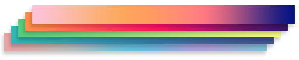

Texture Types

Modern graphic APIs like DirectX12 or Vulkan supports a wide range of Texture types because there are many ways that a Texture can be accessed and presented. Evergine supports all of them. However, some of them are only loaded using some specific image formats (like .dds or .ktx);
Texture 2D
The classic two dimensional texture. It has width and height and as a graphic resource can be accessed using two texture coordinates UV.
Almost every image file can be imported as a Texture2D asset because it's the most common one.
Usage
They are used for almost everything, like Sprites, Diffuse channel, Normal mapping.
Texture 2D Array

The same as the Texture2D above, but it contains an array of textures.
Modern graphics APIs support texture arrays, which is an array of textures with the same size and format. They are treated as the same graphic resource, it also can have mipmapping information and can be sampled using an extra texture coordinate that indicates which array item is needed to be sampled.
Usage
They are useful, for example, for creating sprite atlas or animations, which every element of the array containing a frame of the animation or atlas.
Texture 1D
Texture that only contains only one dimension ( width ) and are sampled using only one texture coordinate.
Usage
Useful when dealing with one dimensional info like gradients, for example.
Texture 1D Array

Array of one dimensional textures as specified before. It's sampled using two texture coordinates: one for the texture address and another for the element in the array.
Usage
Using multiple gradients for a custom shader.
Texture Cube

It's commonly known as Cubemap. It's a texture that contains 6 individual 2D textures that each form one side of a cube. It has the useful property that they can be sampled using a direction vector instead of texture coordinates.
It's like having a 1x1x1 cube and a vector with the sampling direction at its center. It will return the texel placed in the intersection point. Like in the following diagram.

Usage
TextureCubes are mainly used as environment textures for IBL, like radiance and irradiance texture cubes for specular or diffuse components, or creating a Skyboxes for creating the background environment of your scene.
Texture Cube Array
Texture Cube Arrays take a step further than the normal cubemap and stores an array of texture cubes, so they need an aditional coordinate to retrieve the element of the array.
Usage
TextureCubesArray is an intersting choice when creating Reflection Probes of your scene. in one resource can store all the probes of the scene.
Texture 3D
 A 3D Texture is an image that contains information in three dimensions rather the standard two.
A 3D Texture is an image that contains information in three dimensions rather the standard two.
Usage
They are commonly used to simulate volumetric effects such fog, smoke, for raymarching operations or for sprite animation blending.